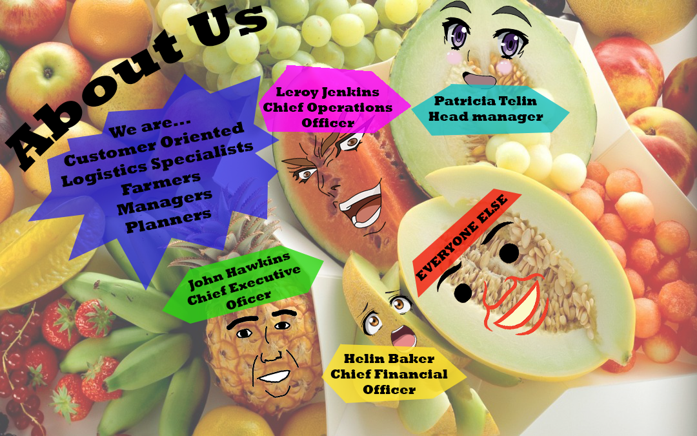

Welcome,
Home
Store
Cart
Contact Us
About Us

Araükaden is a Singaporean-based company that sells fruits online. It was created on the 12th of February, 2012.
For its first 3 years it has been selling fruits in simple stores at the wet markets. It had made a fair
amount of money but the company by then had decided to expand its operations.
It eventually opened up major operations,
buying up larger payloads from farmers and reselling them for more at their countless stores. While they kept their
wet market stores as they were profitable, they had also set up stores in malls boasting stocks that were more affordable
than the ones found in regular retail stores.
Major competitors started delivering groceries to customers through their
online website so Araükaden decided to follow suit and set up their own website in the year 2015. Their website was
overly crowded with items, somewhat unintuitive and not exactly the most pleasing layout on which to display their products.
They had decided they had had enough and created a new, easier to use website that was a sight for sore eyes amidst the sea of
poorly designed websites at the time.